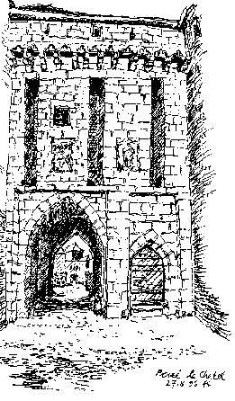
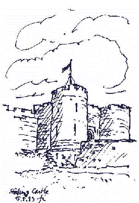

Weitere Datenübertragung Ihres Webseitenbesuchs an Google durch ein Opt-Out-Cookie stoppen - Klick!
Stop transferring your visit data to Google by a Opt-Out-Cookie - click!: Stop Google Analytics
Cookie Info. Datenschutzerklärung
Altbau und Denkmalpflege Informationen Startseite
Spannende Bau-Umfragen - Ihre Stimme zählt
Literatur/Quellen
Denkmalpflege
Online-Translation of websites in other languages? Go translate

Eine Reise zu Kunst, Baudenkmalen, Museen und Antiquitäten
A journey to the past 8
(Mit einigen meiner Reiseskizzen/with some of my sketches) Seiten: Links
und Tips für Burgenfreunde/Castles and Forts 1 2 3 4 5 6 7 8 9 Gast im
Schloß:10 Mittelalter und andere historische Epochen:11
Schlösser zu verkaufen/Castles for Sale:12 Kunsthandel/Antiquitäten/Antics/Antiques/Fine
Art: 13
Konrad Fischer
(aktualisiert 22.01.07)
 Links und Tips
für Burgenfreunde/Castles and Forts 8
Links und Tips
für Burgenfreunde/Castles and Forts 8
Gastliche
Burgen und Schlösser in Frankreich - Chateaux en France

Bildklick - Zu meinen Reiseskizzen von Burgen und Schlössern im Beaujolais
 Carcassonne - das Werk
der Geschichte und von Viollet-le-Duc
Carcassonne - das Werk
der Geschichte und von Viollet-le-Duc
Das
Meisterwerk des Gründers der Deutschen
Burgenvereinigung e.V., Architekt Bodo Ebhardt für Kaiser Wilhelm II.:
Die
Hohkönigsburg im Elsass <>Haut-Koenigsbourg
Le
Haut-Koenigsbourg<>Château
du Haut Koenigsbourg <>Hochkönigsburg,château
de Haut-Koenigsbourg, Alsace<>Haut-Koenigsbourg
in a 3D Model to build
Neu:
Unser deutsches Kaiserhaus
endlich auch online: www.preussen.de
www.bayernskrone.de
- da dürfen auch die Wittelsbacher nicht fehlen - Link zur
Ausstellung im Haus der Bayerischen Geschichte
www.bayern-prinz.com/Home/Home.html
- Offizielle Homepage von Prinz Wolfgang
www.koenig-ludwig.org/de/schloesser/
- Ludwigs Schlösser - Fansite
Das
spanische Königshaus online
Das
norwegische Königshaus online
Das
dänische Königshaus online
www.slotte-herregaarde.dk
- Dänische Herrenhäuser, Burgen und Schlösser
http://www.algonet.se/~sylve_a/slott.htm
-
Skånska slott och herresäten /
Schonische Schlösser und Herrensitze
Die
königlichen Schlösser in Schweden - eine
faszinierende Reise
(mit link zur Königsfamilie!) Empfehlung:
Kina
Slott - ein Traum der Chinoiserie
 Läckö
slott
Läckö
slott
Finnische
Burgen und Schlösser (Deutsch!)
The
British Monarchy - das englische Königshaus online
Buckingham
Palace
Links2Go:
Castles
Castles of
Britain
Tour
DERBYSHIRE,
See Ghosts, Castles and Caverns. Free Downloads
Berkeley
Castle, Gloucestershire, England
Keltica: Welcome Historic
Photographs of ancient celtic landscapes and castles
The Castles
of Wales
The
Great Castles of Wales
Scottish Gift -
pictures of Scotland,its scenery and castles
Burgen
in Schottland
The
Chatelaine's Scottish Castles
Scottish
Castles - Scottish Culture - Net Links
Rampant
Scotland Directory - Castles
Historic
Scotland
The
Great Houses of Scotland
Scotland's
Sources - Castles
Dunvegan Castle

Meine
Reiseskizzen von Glasgow Cathedral, Stirling Castle and The Historic Limekilns of Charlestown, Fife
www.historic.irishcastles.com
Anregungen, Ergänzungsvorschläge? - 
Altbau
und Denkmalpflege
Informationen Startseite
Museumsinformationen
Literatur/Quellen/Links
zu
Burg und Kirche, Geschichte
und Umwelt, Altbau und Denkmalpflege
Denkmalpflege/Bau-Links
Konservieren-Restaurieren?